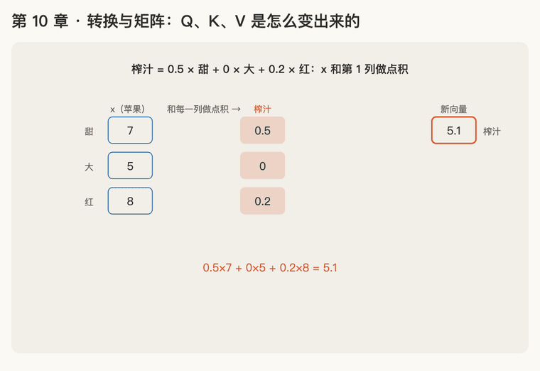

第 10 章 · 转换与矩阵：Q、K、V 是怎么变出来的
本章回答：每个词的 Q、K、V 三个向量，是从哪里来的？
讲解日期：2026-10-26 · 上一章：第 9 章 Q、K、V · 下一章：第 11 章 大写的 Q、K、V
对应原文：materials/text/papers/attention-is-all-you-need-1706.03762.txt§3.2.2，L205–L216（\(W_i^Q, W_i^K, W_i^V\)）
本章缩写：Q / K / V = Query（查询）/ Key（键）/ Value（值）；\(d_{model}\)：d = dimension（维度），每个词向量有几个数（论文 512）；\(d_k\)：k = key，每个 key 向量有几个数（64）；CS336 = Stanford 课程 CS 336（Computer Science 336，Language Modeling from Scratch）；代码里的名字（PyTorch、nn.Linear等）见附录"PyTorch 对照"。全部缩写见 附录 · 缩写与术语表
讲解
第一步：用一组"权重"做点积，得到一个新的数
苹果的向量是 [甜 7, 大 5, 红 8]。如果想得到一个新特征"适合榨果汁的程度"，可以这样规定：
适合榨汁 = 0.5 × 甜 + 0 × 大 + 0.2 × 红
这就是拿苹果向量和一组权重 [0.5, 0, 0.2] 做点积（第 2 章）：
权重决定"每个原始特征占多少分量"：甜很重要（0.5），大小无所谓（0），红有一点关系（0.2）。
准备好几组权重，各做一次点积，就得到几个新数，拼起来就是一个新向量。 这就叫一次"转换"。Q、K、V 就是用三套不同的权重，从同一个词向量转换出来的三个新向量。权重不是人定的，是模型训练时学出来的。
第二步：几组权重排成一张表 = 矩阵
两组权重：适合榨汁 [0.5, 0, 0.2]，好不好拿 [0.1, 0.5, 0]。苹果各做一次点积 → 新向量 [5.1, 3.2]。原来 3 个数（甜、大、红），变成了 2 个新数（榨汁、好拿）。
把两组权重竖着排成一张表，每一列是一组权重：
| 原特征 ↓ / 新特征 → | 榨汁 | 好拿 |
|---|---|---|
| 甜 | 0.5 | 0.1 |
| 大 | 0 | 0.5 |
| 红 | 0.2 | 0 |
这张数字表就叫矩阵（matrix），记作 \(W\)（W = weight，权重）。它有 3 行 × 2 列：行数 = 原向量的长度，列数 = 新向量的长度。
向量乘矩阵 = 向量和矩阵的每一列各做一次点积，结果排成新向量：
第三步：论文里的 \(W^Q\)、\(W^K\)、\(W^V\)
- 每个词向量 \(\mathbf x\) 有 512 个数；
- \(W^Q\) 是 512 行 × 64 列的矩阵，所以 \(\mathbf q = \mathbf x W^Q\) 有 64 个数。这就是第 8 章 \(d_k = 64\) 的来源（为什么偏偏是 64，讲多头时再说）；
- 同一个 \(\mathbf x\) 乘三个不同的矩阵，得到三个不同的向量：
矩阵里的数（权重）一开始是随机的，模型在训练中自己调。
动画演示：和每一列做点积；同一个 x 乘三个矩阵

可交互版：animations/10-matrix-transform.html（要能点按钮、拖滑块，需要用本地服务打开，见 animations/README.md"跑起来看"）。
怎么看：
- 苹果 [7, 5, 8] 和第 1 列权重 [0.5, 0, 0.2] 做点积 → 榨汁 5.1；
- 和第 2 列 [0.1, 0.5, 0] 做点积 → 好拿 3.2；
- 两列排成矩阵 W（3 × 2）：向量乘矩阵 = 和每一列各做一次点积，3 个数变成 2 个数；
- 同一个 x 乘 \(W^Q\)、\(W^K\)、\(W^V\)（512 × 64），得到 q、k、v 各 64 个数；滑块：改一个权重，只有它那一列的结果变。
练习与作答记录
题 1：用另一组权重 [0.1, 0.5, 0] 算苹果的新特征"好不好拿"。
第 1 次作答："这就是大小引起的。"
点评：读懂了权重的含义 ✓：大小的权重 0.5 最大，所以"好不好拿"主要由大小决定。但没算数，追问后补算。
第 2 次作答：3.2 ✓（\(0.1\times7+0.5\times5+0\times8=0.7+2.5+0=3.2\)）
题 2：香蕉 [8, 3, 0] 乘上面的矩阵 \(W\)，新向量是多少？
第 1 次作答：[5.6, 2.3]。第 2 个 ✓；第 1 个 ✗。5.6 = 0.5×8 + 0.2×8，"红"的权重 0.2 乘到了 8 上，但香蕉的"红"是 0。对位错了：权重的第 3 个必须乘向量的第 3 个。
第 2 次作答（对位表格提示后）：[4, 2.3] ✓（\(0.5\times8+0\times3+0.2\times0=4\)）
公式小结
口诀
一组权重做点积，得到一个新特征；几组权重竖着排，就是矩阵。
向量乘矩阵，竖着取列做点积；行数是原长度，列数是新长度。
同一个 x 乘三个矩阵，变出 q、k、v；矩阵里的数靠训练自己调。
本章复习卡片
R17 矩阵与"向量乘矩阵" · R18 Q、K、V 怎么变出来（见 ../review.md）
附录 · 延伸阅读
留给以后深入学习用，不影响本章主线。★ 是建议先读的。
- 本地论文的文本版在materials/text/papers/，表里的行号就是指这个文本版。
- CS336 handout 在cs336-spring2025/materials/text/cs336_spring2025_assignment1_basics.txt。
推荐阅读
| 读什么 | 读哪里 | 读它为了什么 |
|---|---|---|
| ★ 3Blue1Brown《线性代数的本质》 | 第 3 集 Linear transformations and matrices、第 4 集 Matrix multiplication as composition | 矩阵 = 一种"变换"；看懂"向量乘矩阵"的几何意义 |
| ★ Attention Is All You Need | §3.2.2，L205–L216 | \(W^Q, W^K, W^V\) 的形状：\(d_{model} \times d_k\) |
| Goodfellow《Deep Learning》 | §2.2 Multiplying Matrices and Vectors | 矩阵乘法的正式定义 |
| CS336 a1 handout | §3.4.2 Linear Module、§3.3 Batching, Einsum | 作业里自己写 Linear 层；用 einsum 写矩阵乘法 |
数学原理
- 线性变换：满足"先加后变 = 先变后加"、"先放大后变 = 先变后放大"的变换。所有线性变换都能写成乘一个矩阵。
- 列的含义：向量乘矩阵时，结果的第 j 个数 = 向量和矩阵第 j 列的点积。每一列就是一个"新特征的配方"。
- 形状规则：(1 × d) 乘 (d × k) 得 (1 × k)。中间的 d 必须相等，结果取两头。
- 参数量：一个 \(d_{model} \times d_k\) 的矩阵有 \(d_{model} \cdot d_k\) 个可学习的数（论文里是 512 × 64 = 32768）。
公式清单
| 公式 | 意思 |
|---|---|
| \((\mathbf x W)_j = \sum_i x_i W_{ij}\) | 结果的第 j 个数 = x 和第 j 列的点积 |
| \(\mathbf q = \mathbf x W^Q,\ W^Q \in \mathbb{R}^{d_{model} \times d_k}\) | 512 维变成 64 维 |
| \((1 \times d)(d \times k) = (1 \times k)\) | 形状规则 |
| \(f(a\mathbf x + b\mathbf y) = a f(\mathbf x) + b f(\mathbf y)\) | 线性的定义 |
PyTorch 对照：把本章的数字用代码算一遍
代码在仓库本地
transformer-deep-dive/solutions/chapter-code/ch10_matrix_transform.py，配套测试tests/test_ch09_13.py（在线版不带代码文件，下面摘了关键几行）。Mac 上直接能跑，不需要 GPU：
bash cd transformer-deep-dive/solutions/chapter-code uv run python ch10_matrix_transform.py
讲义 ↔ 代码：
| 讲义 | 公式 / 说法 | PyTorch 写法 | 跑出来 |
|---|---|---|---|
| 一组权重做点积 | 0.5×7 + 0×5 + 0.2×8 | x @ W[:, 0] |
5.1 |
| 向量乘矩阵 | \(\mathbf x W\) = 和每一列各点积 | x @ W |
[5.1, 3.2] |
| 形状 | 3 行 × 2 列：3 个进、2 个出 | W.shape |
(3, 2) → 结果 (2,) |
| PyTorch 的线性层 | 同上 | nn.Linear(3, 2, bias=False) |
[5.1, 3.2]，但它存的 weight 是 2 × 3 |
| 论文 \(W^Q\)、\(W^K\)、\(W^V\) | 512 × 64 | x @ w_q |
q、k、v 各 (64,)，三个不一样 |
关键几行：
W = torch.tensor([[0.5, 0.1], [0.0, 0.5], [0.2, 0.0]]) # 每一列是一组权重
APPLE @ W # [5.1, 3.2]
layer = nn.Linear(3, 2, bias=False) # nn = neural network（神经 / 网络）
with torch.no_grad():
layer.weight.copy_(W.T) # 它存的是"输出 × 输入"，所以放 W 的转置
layer(APPLE) # [5.1, 3.2]
代码里才看得到的：
nn.Linear存的是 \(W\) 的转置：讲义的 \(W\) 是"进 × 出"（3 × 2），nn.Linear(3, 2)的weight是"出 × 进"（2 × 3），算的是x @ weight.T。第 22 章共用 embedding 表时，正是这个习惯让它不用转置。with torch.no_grad()（no gradient：不记梯度）：手动往参数里写数时要包在里面，不然 PyTorch 会把"写入"也当成要求导的一步。
自己改一改：
- 香蕉 [8, 3, 0] 乘
W（题 2）：先手算，再跑torch.tensor([8.0, 3.0, 0.0]) @ W。